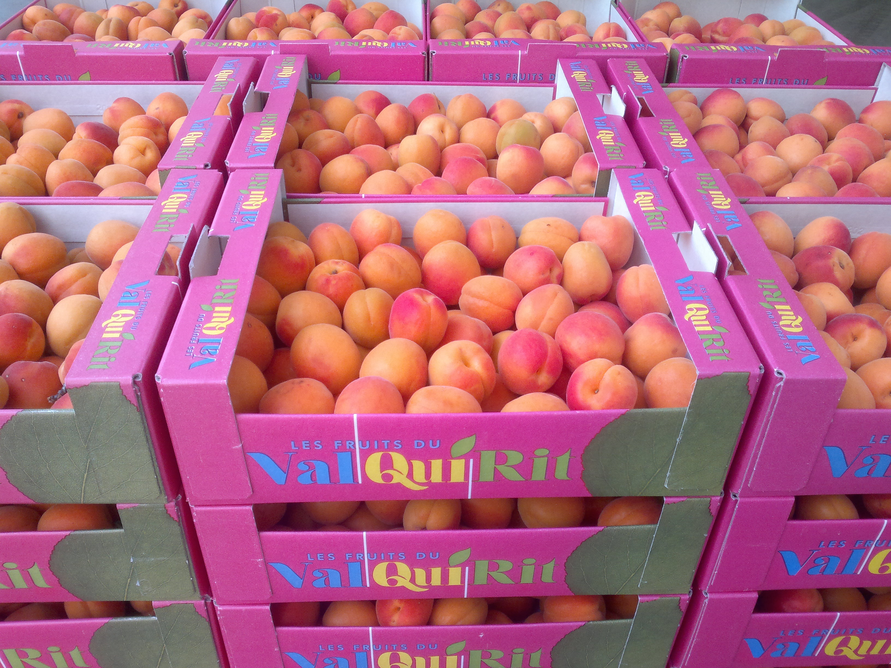
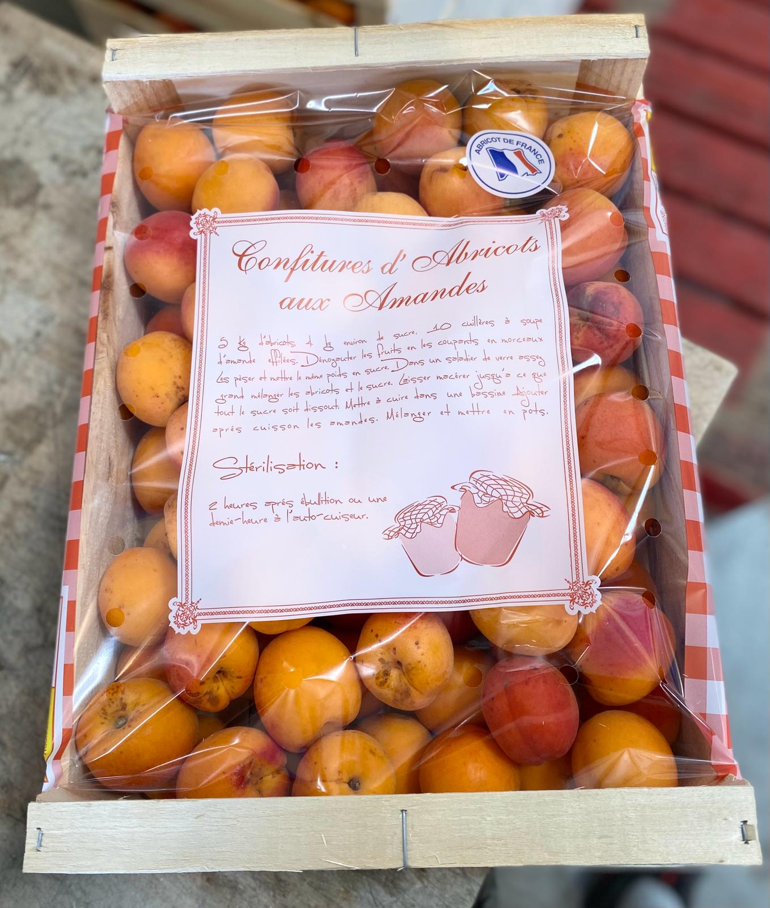
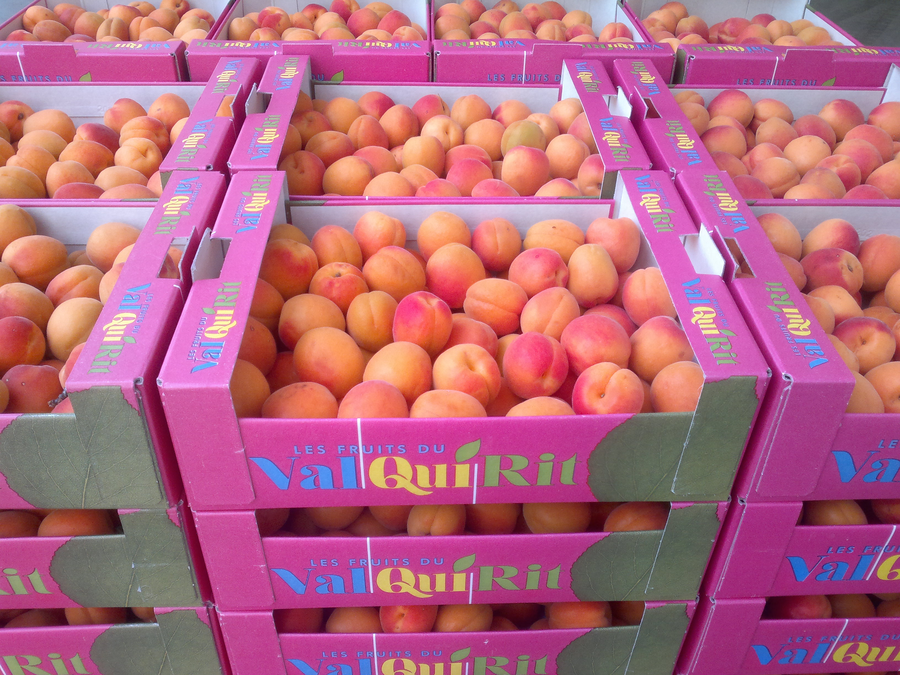
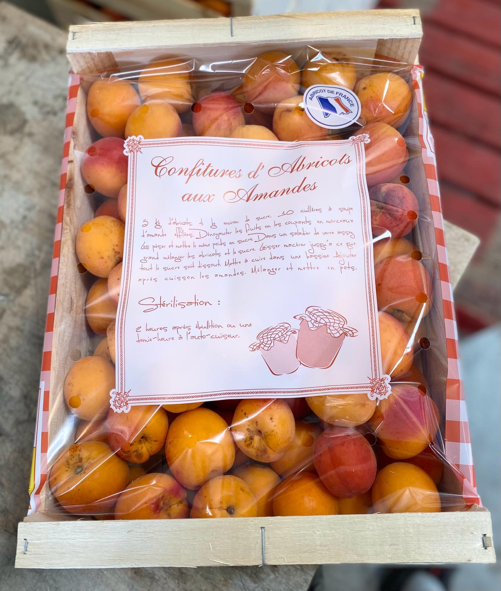

En quête d’un abricot gustatif, les vergers sont constamment renouvelés. Nous retrouvons des variétés adaptées à notre climat et notre terroir comme Vertige, Swired, Origat, Noogat… Notre production d’abricot s’étend aujourd’hui sur une surface de 40 Ha.
A ce jour, notre potentiel de production d’abricot est de 800 T. De Juin à Septembre, nous proposons des variétés Label Rouge sur la majeure partie de saison.

A la production, nous optimisons la qualité de l’abricot d’abord par la taille en vert. L’irrigation est sous frondaison ou par goutte-à-goutte enterré : Meilleur apport en eau quantité ajustée, sans évaporation, sans brûler le feuillage en plein été. L’éclaircissage à la main, consistant à réguler le nombre de fleurs/fruits, permet d’obtenir un bon calibre d’abricot : La qualité avant la quantité. La récolte s’effectue en 3 à 4 passages selon notre taux de sucre, fermeté et coloration. En station de conditionnement, ce fruit fragile est travaillé en lieux climatisés. Analyse de chaque lots (Taux de sucre, Fermeté, Coloration…) Calibrage pondérale de chaque fruit et Tri Optique de colorimétrie. Calibreuse conçue pour une manipulation douce, aucun fruit ne subis de chocs. Nos qualités de traçabilités répondent aux exigences de notre certification Global GAP GRASP.
 



Nous produisons nos fraises en pleine terre, sous abris, sur buttes surélevées avec paillsur, et entre les buttes. - La serre permet une protection physique contre les aléas climatiques et la pluie, source de développement de maladies fongiques (réduction de traitements fongiques). - Le paillage limite le désherbage (ici manuel lorsque nécessaire) et limite aussi attaques d’insectes du sol. - Les buttes surélevées et le paillage au sol protègent la fraise du contact avec le sol/la poussière. Notre conseil : ne jamais laver nos fraises, vous lessiverez 50% de son goût et ses parfums. - Une production plus précoce possible grâce à l’isolation naturelle de la serre en maintenant la chaleur.
Etant autonome de la production, par la commercialisation jusqu’à la vente avec nos propres véhicules, nous pouvons garantir la fraicheur de nos fraises sans intermédiaires (sans clients ni logistiques intermédiaires). Le jour J : Récolte et préparation des commandes La nuit : Livraison de nos fraises Au petit matin : Fraises sur votre étales !

Notre potentiel de 120 T de fraises nous permet de suivre nos clients sur notre saison. Grâce à des plantations et couvertures de serres échelonnées , notre production s’écoule régulièrement tout au long de la saison.
Les Fruits du Val Qui Rit compte 45 salariés pour sa récolte de fraise. Ces équipes sont toujours accompagnées de salariés permanents qui connaissent le fruit, sa récolte, sa manipulation à adopter.

Pour se protéger des aléas climatiques et pour réduire nos traitements fongiques, désherbants ou encore contre les nuisibles, nous produisons nos framboises sous serres (contre la pluie et donc les maladies), hors sol et avec un paillage au sol (limite l’attaque de nuisible du sol, ainsi que le désherbage).
Ce petit fruit qui est la framboise se doit d’être consommée fraiche ! Sur un même fonctionnement que nos fraises, nous récoltons chaque jour pour une expédition la nuit même. La récolte est réalisée par des ramasseurs formés et habitués.
Objectif : Se différencier par le gustatif. Nous avons donc opté pour la variété Vajolet qui se montre parfumée, charnue et de gros calibre.


Pour se protéger des aléas climatiques et pour réduire nos traitements fongiques, désherbants ou encore contre les nuisibles, nous produisons nos framboises sous serres (contre la pluie et donc les maladies), hors sol et avec un paillage au sol (limite l’attaque de nuisible du sol, ainsi que le désherbage).
Ce petit fruit qui est la framboise se doit d’être consommée fraiche ! Sur un même fonctionnement que nos fraises, nous récoltons chaque jour pour une expédition la nuit même. La récolte est réalisée par des ramasseurs formés et habitués.

Objectif : Se différencier par le gustatif. Nous avons donc opté pour la variété Vajolet qui se montre parfumée, charnue et de gros calibre.
Le climat comme le terroir, deux éléments incontournables pour l’agriculture et qui se montre favorable sur la plaine de la Crau. Ancien lit de la Durance, le terrain s’est constitué d’alluvions, propice à la production de Pêche.
Les vergers sont conduits suivant un cahier des charges rigoureux et adaptés. De la charge en fruits maitrisée selon des rameaux sélectionnés et par l’éclaircissage, en passant par l’irrigation et la nutrition mesurées et ajustées en fonction des relevés et observations, jusqu’à la récolte effectuée soigneusement par prélèvement des fruits prêts uniquement (4 à 5 passages sur l’arbre).
La production de courgette est sous serres, sur buttes avec paillage. C’est ainsi que nous réduisons le désherbage et les maladies fongiques étant abrité de la pluie. L’apport en eau est piloté par goutte à goutte, permettant d’ajuster finement l’apport en eau nécessaire à la production en fonction des besoins de la plante.
Pour garantir l’homogénéité et l’aspect visuel de nos courgettes, nous récoltons tous les jours. En effet, la courgette ne cesse de pousser c’est pourquoi nous récoltons chaque jour pour respecter notre calibrage entre 14 – 21 cm. Pour ce, une solution : Cueillir la courgette au bon moment, au bon calibre. De plus, nous récoltons nos courgettes avec des gants pour éviter toutes marques de manipulations sur le légume.
Au mois d’Août, la récolte de Prune Mirabelle complète nos productions sur le restant de l’été. Comme tous nos vergers, la méthode de production est maitrisée. L’irrigation sous frondaison, la taille, la nutrition et la récolte suivent nos principes. Nous récoltons à la main et gardons notre méthode pour cueillir les fruits prêts uniquement. Un fruit authentique au goût de soleil du mois d’Août, qui sait se faire apprécier sur ces derniers fruits à noyaux de l’été.


Producteurs depuis 3 générations, nous avons développé un large panel de variétés afin de proposer une gamme complète à nos clients et nos consommateurs. De l’authenticité à l’innovation, nous cultivons un savoir faire de la variété Chantecler à la Story sur nos vergers plus jeunes vergers.
L’eau, la protection phytosanitaire, la nutrition, la protection aux aléas climatiques… Des paramètres à anticiper, piloter ou avec lesquels nous nous adaptons. En effet, pour lutter contre les orages de grêles d’été, nos parcelles sont couvertes de filets paragrêle afin de protéger physiquement nos pommiers pour assurer une récolte au mois de Septembre. Un radar météo au siège de notre exploitation, ainsi que des stations météo sont disposées dans différentes parcelles afin de prévenir et mesurés (eau, vent, hygrométrie, température…). Depuis 10 ans, nos n’arrosons plus par aspersion « par-dessus », mais sous le feuillage par micro jet pendulaire. Cela réduit l’évaporation, la consommation d’eau et apporte l’eau directement au pied de l’arbre. Les nutriments, en cas de besoin, sont apporté également par l’eau pour une meilleure mesure de l’apport et une meilleure assimilation par l’arbre. Enfin, la confusion sexuelle contre le carpocapse est un exemple d’application visant à réduire nos interventions phytosanitaires.